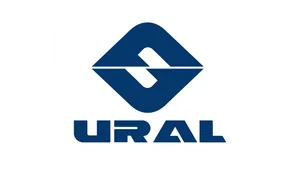
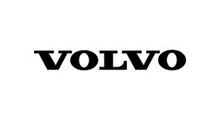
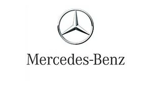
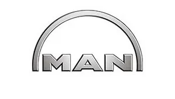
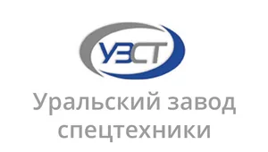
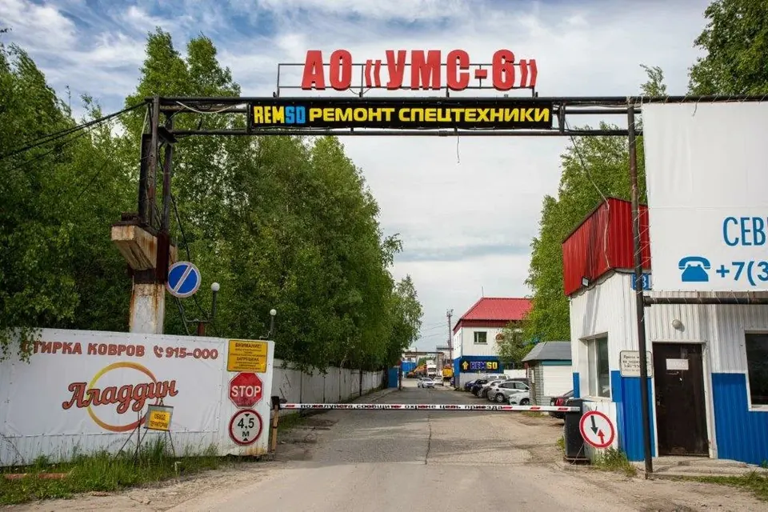
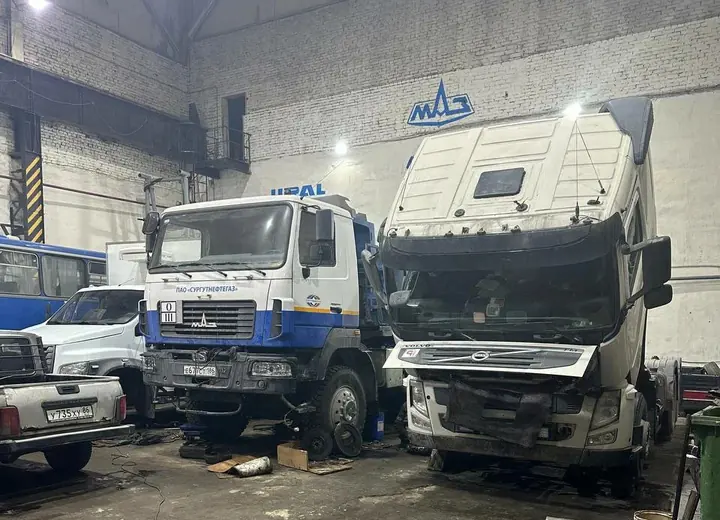
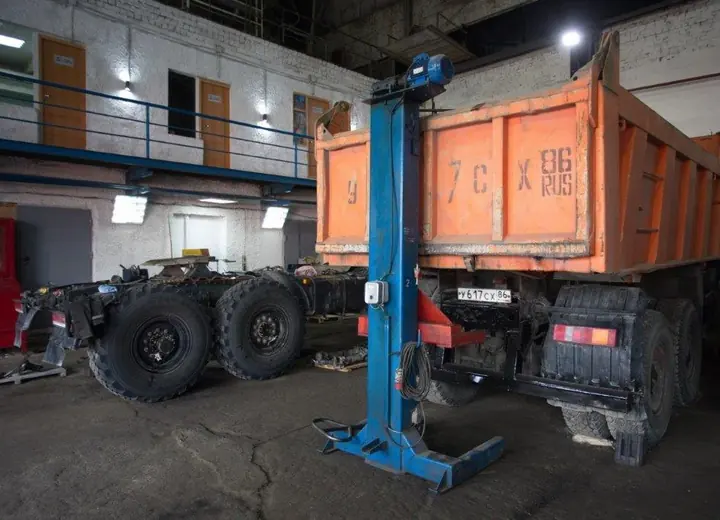
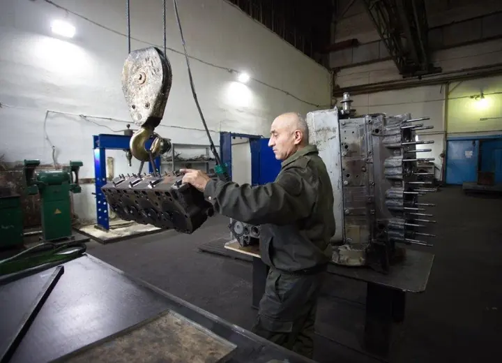
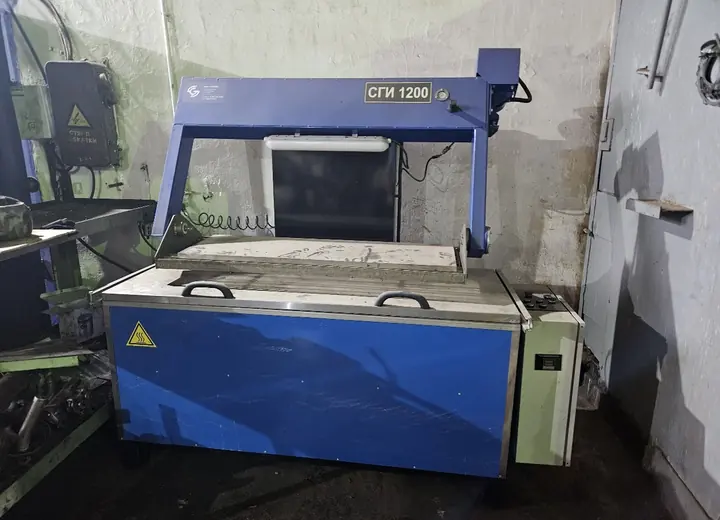

Официальный сервисный центр МАЗ, КАМАЗ, УРАЛ
Ремонт грузовых автомобилей и спецтехники в Сургуте
РемСД обслуживает грузовые автомобили, спецтехнику, полуприцепы и тралы для компаний в Сургуте и ХМАО.
Официальный сервис
Ремонт КАМАЗ, МАЗ и УРАЛ в Сургуте
Три основных входа для владельцев грузовой техники: брендовая диагностика, ТО и ремонт агрегатов с переходом в нужный раздел.
Официальный сервисный центр

Ремонт КАМАЗ
Двигатель, ГБЦ, КПП, электрика, топливная система, ходовая, тормоза и гидравлика.
Перейти к ремонту КАМАЗ Официальный сервисный центр
Ремонт МАЗ
Диагностика, ДВС, ГБЦ, трансмиссия, тормозная система, электрика, охлаждение и ТО.
Перейти к ремонту МАЗ Официальный сервисный центр
Ремонт УРАЛ
Двигатель, раздатка, мосты, ходовая, тормоза, электрика, гидравлика и обслуживание шасси.
Перейти к ремонту УРАЛМарки техники
Также обслуживаем другие бренды
Грузовые автомобили и спецтехника, с которыми работает сервисная база.
-

Volvo - JCB
- Scania
- Renault
- New Holland
-

Mercedes-Benz -

MAN - Komatsu
- John Deere
-

УЗСТ
Направления ремонта
Что нужно сделать с техникой?
Ремонт грузовых автомобилей
МАЗ, КАМАЗ, УРАЛ и другие грузовые Т/С
Ремонт спецтехники
узлы, агрегаты и системы спецтехники
Ремонт двигателей
диагностика, разборка, ремонт ДВС
КПП и трансмиссия
коробки передач, сцепление, мосты, карданы
Ходовая, тормоза и развал-схождение
подвеска, тормозная система, углы установки колес
Гидравлика и РВД
гидроцилиндры, насосы, распределители, рукава
Автоэлектрика и диагностика
проводка, датчики, ошибки, стартеры и генераторы
Ремонт полуприцепов и тралов
рамы, подвеска, тормозные системы
Сервисный центр
Перечень услуг по ремонту
Основные карточки ведут в крупные разделы. Внутри списка ссылками отмечены работы, у которых уже есть своя страница.
КПП и трансмиссия
Ходовая, тормоза и развал-схождение
- Диагностика ходовой
- Ремонт подвески
- Ремонт тормозной системы
- Ремонт ступиц, осей и рам
- Развал-схождение грузовиков
Гидравлика и РВД
Автоэлектрика и диагностика
Топливная система
Система охлаждения
SCR / AdBlue
ТО грузовой техники
Полуприцепы и тралы
Официальный сервис МАЗ, КАМАЗ, УРАЛ
Ремонтная база в Сургуте
Работаем по Сургуту и ХМАО
Сертификаты и документы
Ремонтная база
Фотографии ремонтной базы в Сургуте
Реальные фото территории, сервисной зоны, техники в ремонте и оборудования цеха.





Документы
Сертификаты и документы
Часть документов размещена сразу на главной, полный список можно открыть в отдельном разделе.
Смотреть сертификаты